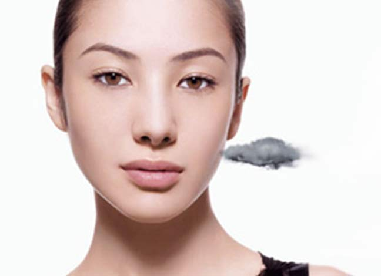
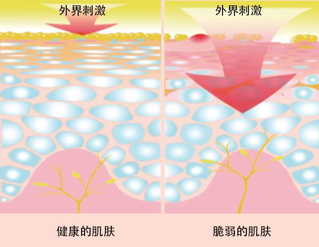

Q：肌肤敏感就是过敏了吗？
A：过敏不等于敏感!
皮肤敏感是因为某个人在某个时段对某个环境或特殊物质特定出现的，比如换季时的花粉、东北地区长时期的干燥寒冷等环境都会引发暂时的敏感现象。同时一定要区分的是:大多数因使用产品而发生肌肤不适的顾客，其实都是因为其对产品短暂的不适应造成的刺激。如停止使用产品后，短时间内的敏感现象就会自行消失，因此，它并不是医学上所指的“过敏反应”，只能称之为是皮肤刺激。
皮肤过敏是一种皮炎症状，是病！如果皮肤在停用产品一段时间后，过敏状况还是没有得到改善，或者变得更加严重的才有可能是过敏反应。过敏不仅会在面部肌肤上会产生刺痛、痒等现象，甚至在身体的肌肤也会发生相同的问题。因此，皮肤敏感和皮肤过敏这两个概念是需要区分开来的。肌肤产生不适要及早就医，经医生的诊断才能得知是否过敏或敏感，以选择适合的调理方法。
从肌肤内部结构作用来看，脆弱肌肤更容易受外部刺激：

外因:皮肤屏障功能弱（角质层薄+皮脂膜不完整）
内因:神经纤维经常受到刺激，过于亢奋
拥有健康平衡肌肤其实很简单！
√不饮酒、不吸烟、少吃浓茶、咖啡、麻辣等刺 激性食品，多吃新鲜水果蔬菜
√ 尽量避免接触花粉，柳絮飞扬或者沙尘天气尽量少出门，记得戴口罩和围巾
√ 避免过冷、过热环境，墨镜、口罩随身带
√ 避免情绪激动，不要生气也不要紧张
√ 枕巾、毛巾经常清洗，清洗时要漂洗干净
√ 保持运动习惯，提升抵抗力
√ 保持充足睡眠，不要熬夜
√ 适当护肤。避免强力去角质产品，给予肌肤充足、温和的滋润，重建肌肤保湿屏障